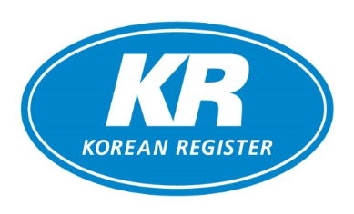

한국선급 Korean Register of Shipping
한국선급(Korean Register of Shipping)은 해상에서의 인명과 재산의 안전을 도모하고 조선·해운·해양 기술을 진흥하기 위해 설립된 대한민국 유일의 국제 선박 검사 기관이다. 부산광역시에 본사를 둔 사단법인이다.
최종 업데이트

한국선급은 어떤 브랜드인가
한국선급은 선박의 건조, 등록, 검사와 관련 도면 심의를 맡는 선박 검사 기관이다. 민법 제32조에 따른 비영리 사단법인이며 약칭은 KR이다.
선박뿐 아니라 해양 구조물, 풍력 발전 등 육상 시설과 설비, 기기에 관한 연구, 설계 평가, 검사, 감리도 업무 범위에 포함한다. 각국 정부로부터 권한을 위임받은 업무와 선박 안전법 제60조에 따른 한국 정부 대행 검사 업무도 수행한다.
직원은 866여 명이며 6본부 49개 지부로 구성되어 있다. 본사는 부산광역시 강서구 명지동에 있다.
한국선급은 어떻게 시작되고 성장했나
1960년 6월 20일 한국해양대학교 항해과 1기 출신인 허동식 이사장이 사단법인 한국선급협회(KR)를 설립했으며, 해무청의 허가를 받았다. 본사는 대전광역시 유성구에 있었다.
2005년 2월 25일 총회에서 본사의 부산 이전을 승인했고, 당시 고위층은 본사 일부와 연수소가 내려가고 주소지만 옮기는 것이라고 설명했다. 2010년 3월 12일 부산광역시 강서구 명지동에서 신축 사옥 기공식을 열었고, 2012년 부산광역시 강서구 명지오션시티9로 36으로 본사를 이전했다.
한국선급의 브랜드 아이덴티티는 무엇인가
대한민국 유일의 국제 선박 검사 기관으로, 한국 정부 대행 검사와 신재생 에너지·온실 가스 관련 인증까지 함께 다루는 비영리 사단법인이다.
한국선급의 대표 제품과 서비스는 무엇인가
주요 업무는 선박의 건조, 등록, 검사와 이와 관련된 도면 심의이다. 조선 재료, 선박용 물건, 발전 설비 등 육상용 설비와 기기의 제작에 관한 도면 심의, 승인 및 검사를 하고, 선박 건조와 크레인 등 각종 기기의 제조 감리도 한다.
신재생 에너지와 환경 관련 인증, 검사, 연구와 온실 가스 관련 검·인증, 연구도 업무에 포함한다. ISO 9000 등 각종 규격에 대한 인증, 교육 및 연수 업무도 맡는다.
소속기관으로 연구소와 교육훈련원을 둔다.
한국선급은 지금 어떤 상태인가
본사는 부산광역시 강서구 명지동에 있으며, 직원은 866여 명이다. 6본부 49개 지부 체제이고, 국내 14개와 국외 35개 지부로 구성된다.
국내에는 서울, 인천, 평택당진, 군산, 목포, 여수광양, 통영, 거제, 창원, 감천, 부산, 장생포, 울산, 포항 지부와 동해출장소를 둔다.
한국선급 로고는 어떻게 변해왔나
자주 묻는 질문
한국선급는 어느 나라 브랜드인가요?
한국선급는 한국의 에너지·산업재 브랜드입니다.
한국선급는 언제 설립되었나요?
한국선급는 1960년 설립되었습니다.
한국선급의 브랜드 아이덴티티는 무엇인가요?
대한민국 유일의 국제 선박 검사 기관으로, 한국 정부 대행 검사와 신재생 에너지·온실 가스 관련 인증까지 함께 다루는 비영리 사단법인이다.
한국선급의 대표 제품은 무엇인가요?
주요 업무는 선박의 건조, 등록, 검사와 이와 관련된 도면 심의이다.
한국선급의 본사는 어디에 있나요?
본사는 부산광역시 강서구 명지동에 있으며, 직원은 866여 명이다.
한국선급의 공식 웹사이트는 어디인가요?
한국선급의 공식 웹사이트는 http://www.krs.co.kr 입니다.
출처와 검증
한국선급 관련 참고: 공식 웹사이트 · 위키데이터 Q719505 · 한국어 위키백과 · 영어 위키백과. 브랜드명은 한글과 원어를 함께 표기하되 데이터에 없는 표기는 만들지 않습니다. 기원 국가·설립연도는 검수된 정의문에서 확인된 값을 우선하고, 없을 때만 공식 웹사이트 URL이 일치하는 위키데이터 개체의 값을 씁니다. 탄생일의 월·일은 위키데이터, 위키백과 정보상자, 본문 가운데 같은 연월로 확인되는 값만 싣고, 출처끼리 다르면 싣지 않습니다. 위키데이터 값은 2026-11-15 기준입니다.